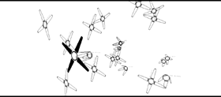

|
R U N N I N G T H E S O F T W A R E
First you must start a Verse server, do this by clicking on the
server icon, and then start the modeler. In order to use the
modeler you must now connect to a Verse server, if the server
you want to connect to is on the same machine as the modeler
click on the "Localhost" button. If not, click on the line to
type in a host name or IP-address of the remote machine where
the server is running.
Tip: Connect several modelers to the same server to be able
to collaborate on models. This can be done on a LAN or over
the Internet.
Now you enter the object browser, here you can see all the
objects on the server and you can choose one to model. If there
are no objects present, press the "create object" button at the
bottom of the screen.
|
You can also press Disconnect to disconnect from the server or Exit to quit the modeler.
Tip: at any time you can panic-quit by pressing the F12 key on your keyboard.
Once you have chosen or created a new object, you can click on the object to enter
the modelling environment.

|
|